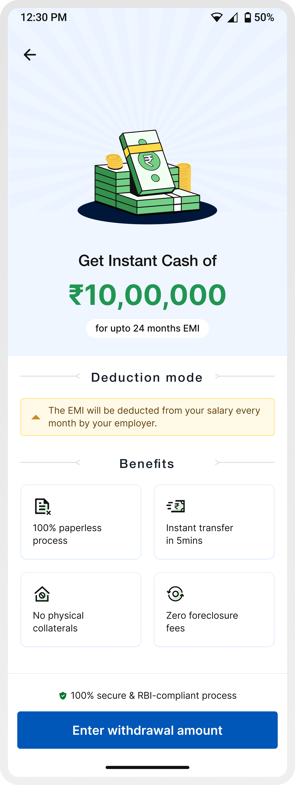
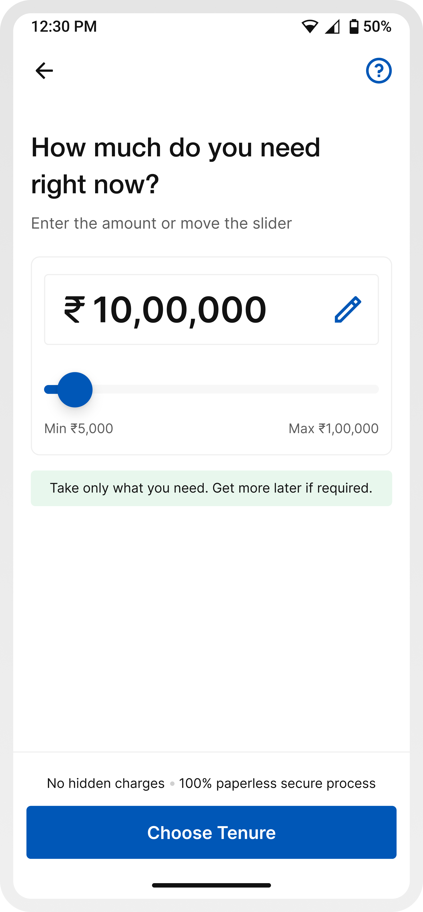

Lack of decision clarity
Users could see repayment options, but often struggled to evaluate them and decide what worked best.
Fintech / Homepage
Focused on reducing drop-offs across key steps, guiding users through critical financial decisions, and simplifying the overall journey from intent to disbursal.

About the company
Refyne is a financial wellness platform built to help working professionals feel more in control of their money. It gives employees access to their earned salary when they need it, along with simple tools to better manage and plan their finances.
The goal is to reduce everyday financial stress — from mid-month cash crunches to unexpected expenses — while helping companies build a more engaged and less stressed workforce.
Problem Statement
Refyne’s salary advance journey showed strong intent, but weak completion. A large number of users were starting the flow but dropping off before disbursal, especially at key decision points like EMI selection and autopay setup.
Users could see repayment options, but often struggled to evaluate them and decide what worked best.
Information was presented all at once, without much guidance, making the journey feel heavy.
Steps involving repayments and bank setup created hesitation and anxiety.
Generic loaders and lack of context made it hard to understand what was happening between steps.
Users often depended on support for basic questions during the journey, particularly around repayments and autopay.
Research and findings
To understand where the journey was breaking, I looked at a mix of customer support queries and direct user conversations.
A large number of users were reaching out during the journey—often for small but important clarifications.
To go deeper, I also spoke to users who had either dropped off or hesitated during the journey to understand what was going through their mind.
Across both support queries and calls, the same questions kept coming up:
Optimisation
Breaking down the key improvements made across the journey to better support user decisions and improve completion.
Screen 1 / Salary Advance Landing Page
In the earlier experience, users were taken straight into the journey without enough context—often leading to confusion around repayments, deductions, and overall product understanding.
To address this, we introduced a dedicated entry screen that sets expectations upfront before users begin the process.
Communicates the offering immediately — “Get instant cash of ₹X”
Highlights key advantages like paperless process, instant transfer, and zero foreclosure fees
Explicitly explains that EMIs will be deducted directly from salary, reducing uncertainty around repayments
Reinforces safety through RBI-compliant messaging
Guides users clearly into the next step — Enter withdrawal amount

Screen 2 / Enter amount
In the earlier experience, amount entry was treated as a basic input step. Users were expected to enter a number without clear visibility into their eligibility, limits, or what a “right” amount looks like.
This led to guesswork, repeated edits, and low confidence before moving forward.
The updated experience reframes this step as a decision-making moment—introducing clear boundaries, flexible controls, and contextual cues that help users explore and finalize an amount with confidence.


Slider + editable field allows both exploration and precision
The CTA shifts from a generic action to a guided next step (“Choose tenure”), helping users understand what comes next in the journey
Showing “eligible up to ₹X” reduces guesswork and anchors decision-making
Messaging like “No hidden charges” and “100% secure process” reassures users at a moment where financial hesitation is high
Screen 3 / Choose tenure
Choosing an EMI plan is one of the most critical decisions in the journey. In the earlier experience, while details like charges and interest rates were available, they were surfaced later on the summary screen.
This meant users were expected to select an EMI plan without fully understanding the financial implications upfront, often leading to hesitation or back-and-forth navigation.
The updated experience brings more structure and guidance to this step, helping users make a decision with better clarity and confidence.


A default plan reduces the effort required to evaluate multiple options.
EMI amount, tenure, and interest rate are easier to scan together, reducing mental load.
By improving clarity at this stage, users don’t need to rely on later screens to validate decisions.
Limiting visible choices prevents overwhelm, with the option to explore more if needed.
`Continue` keeps the journey moving forward without introducing friction.
Screen 4 / Loan overview
This is the point where users stop and try to understand the full picture, how much they’ll receive, what gets deducted, and what they’ll need to repay.
In the earlier experience, while all the information was technically present, it wasn’t structured in a way that made it easy to grasp. Users often couldn’t clearly tell how much money they would actually receive after deductions, as charges like processing fees were not highlighted strongly enough. Monthly EMI and repayment details also lacked emphasis, making it harder to quickly evaluate the commitment.
On top of this, the flow itself introduced friction. If a user wanted to change the amount or tenure after reviewing these details, they had to cancel the entire application and restart the journey. This broke the flow at a critical moment and often led to drop-offs.
The updated experience restructures this step to make information clearer, more visible, and easier to act on, while also allowing users to review and adjust their decisions without being forced to start over.


Makes the final disbursed amount immediately visible and understandable.
Charges are structured and surfaced clearly to avoid surprises.
Key repayment information is easier to spot and evaluate.
Users can revisit and adjust decisions without restarting the journey.
Instead of locking users in early, the application is now created after this step (at autopay/OTP), allowing users to review before committing.
Screen 5 / Setup autopay
Setting up autopay is where intent often drops, because this is the moment users feel they are committing financially.
In the earlier experience, this step felt rigid and unclear. Users were asked to set up autopay without fully understanding why it was needed, how it worked, or what their alternatives were. The experience was limited to a few methods, lacked flexibility, and introduced friction by forcing users into a setup flow without enough context or reassurance.
Additionally, key information wasn’t structured effectively. Details like the linked bank account and minimum balance requirements were separated, even though the required balance varies by bank. This lack of proximity made it harder for users to quickly connect the information, adding to confusion and hesitation.


A contextual explanation upfront reduces anxiety and answers the biggest user question immediately.
Messaging clarifies that salary deduction is the primary mode, and autopay acts as a safety net.
Introducing UPI, Aadhaar, Netbanking, and Debit Card gives users choice and control.
Highlighting “Quick setup via UPI” reduces friction and speeds up completion.
Bank account details and corresponding minimum balance requirements are placed together, making it easier to understand what applies to the selected account.
Information like small bank charges, balance requirements, and “how it works” removes ambiguity.
Screen 6 / Transaction states (success, failure, pending)
The final transaction states are critical, they determine whether users feel confident, anxious, or unsure about what just happened to their money.
In the earlier experience, while different states existed, they lacked clarity and depth. Failure and pending states were especially weak, users were informed that something went wrong or was in progress, but without any clear reason or guidance on what to do next. This often led to confusion, repeated retries, or support calls.
There was also inconsistency in how these states were presented, making it harder for users to quickly differentiate between success, failure, and pending scenarios.


Success, failure, and pending are visually and structurally distinct, making them instantly recognizable.
Failure and pending states now provide specific, contextual reasons (e.g., bank issue, insufficient balance, processing delay), reducing ambiguity.
Instead of leaving users stuck, failure states now guide users on what to do next (retry, change method, wait).
Clear communication that the process is underway, along with expectation setting, reduces anxiety.
All states follow a predictable pattern: status → explanation → details → next step, improving usability.
Users can still view transaction details and EMI info across all states without losing context.
Impact
More users completed the journey end-to-end.
Clearer in-flow information reduced dependency on support.
Less drop-offs at EMI selection and autopay.
Fewer doubts around charges, disbursal amount, and repayments.
A refined journey designed to make financial decisions feel clearer, faster, and more confident through thoughtful interactions and seamless transitions.
Learnings
Users weren’t confused because information was missing they were confused because they had to figure things out themselves. Guiding the decision mattered more than explaining everything.
Every moment of doubt (EMI, charges, autopay) directly impacted conversion. Reducing that hesitation had a clear business impact.
Users don’t trust because you say “secure.” They trust when things feel predictable, transparent, and easy to understand at every step.
Loaders, transitions, and states weren’t just polish they were moments where users either felt in control or felt lost.
Something as simple as when an application gets created can either create friction or remove it entirely. This project made it clear that UX goes beyond screens.
View Other Projects

Edtech / Classroom app
A unified platform that simplifies assignments, attendance, and communication for teachers, students, and parents.
Open case study
Fintech / Homepage
Better structure, clearer priorities, and stronger guidance turned the homepage into a more useful product surface.
Open case study
Personal Exploration
Motion studies and calmer interactions that explore how healthier digital habits can feel more intentional.
Open case study